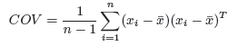

This example will run through a non-trivial application based on "The Principal Components of Natural Images" by Hancock et al. Using HIPI, we run the same application on a massive data set (as opposed to 15 images in the original paper) and compare our results for the first 15 principal components of randomly sampled images. To do this, we calculate the covariance matrix for 100 random samples from each image, then perform SVD on the covariance matrix to get the principal components. Covariance is calculated according to the following formula:
Where x_i is a random sample from our image set, and x_bar is the mean of the random samples. This equation turns out to be embarassingly parallel. We will use this quality to run a MapReduce job with HIPI extremely efficiently.
The general flow of the application is as follows
To compute the average patch of an image, we use a MapReduce job to help parallelize the calculation. In the map phase, we first determine the location of the 100 random samples for a particular image (and store this data), then compute the average of these samples. We emit this average to the reduce phase, which will collect the average from every image, and take the average of those results to come up with the average patch for the entire sample. Simply put, it is an average of averages algorithm.
Now that we have the average patch, we can compute the covariance according to the equation:
Notice that this is a summation across each sample patch, and that the terms of the summation are independent of each other. As a result, this summation is extremely parallel. In other words, we can compute the contribution of each sample patch to the covariance matrix independently (i.e. in parallel) and sum the results up later.
Knowing this, we parallelize this job by image, so that each map node is responsible for the 100 random samples that correspond to an image. In the map phase, we compute the contribution of a particular patch x_i to the Covariance Matrix: and emit these results to the reducer. In the reduce phase, we sum these terms up and result in the Covariance Matrix for our entire sample set. Parallelizing this process is extremely beneficial, as there are matrix multiplications performed in calculating each term in the summation.
After determining the covariance for our randomly sampled patches, we used Matlab to find the first 15 principal components.


As expected, images do not correlate perfectly because we are using far different inputs to our experiments, and our display of positive and negative values also may differ slightly. However, certain principal components are the same (1, 7, 12), are merely switched (2 and 3, 4 and 5), or show some resemblance to the original experiment but are rotated or mirrored (15). Performing a principal component analysis on a massive, unrestricted data set gives us unparalleled knowledge about images. For tasks such as these, HIPI excels.